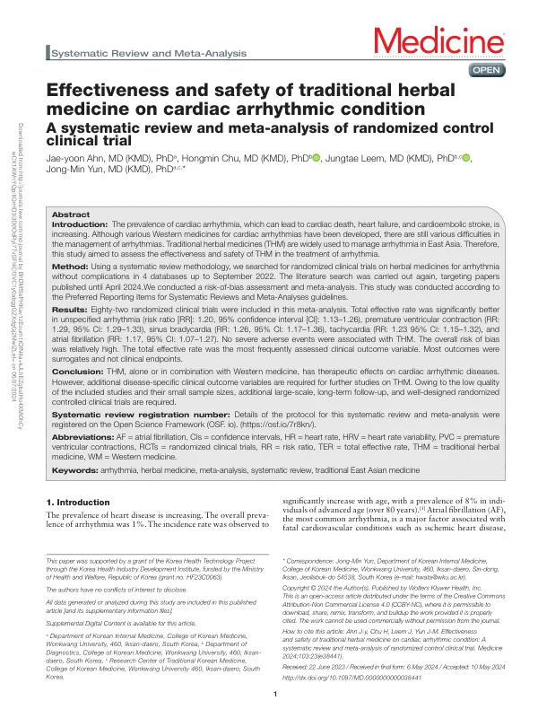

Effectiveness and safety of traditional herbal medicine on cardiac arrhythmic condition: A systematic review and meta-analysis of randomized control clinical trial
Ahn Jy, Chu H, Leem J, Yun JM
Medicine 103(23):e38441

첫 장 · 오픈액세스First page · open access
논문 소개Summary
부정맥에 쓰이는 한약의 효과와 안전성을 무작위대조시험 82편을 모아 확인한 체계적 문헌고찰입니다. 네 개 데이터베이스를 2022년 9월까지 검색하고 2024년 4월까지 다시 검색했습니다. 총유효율은 부정맥 전반(위험비 1.20, 95% 신뢰구간 1.13~1.26), 심실조기수축(1.29), 동서맥(1.26), 빈맥(1.23), 심방세동(1.17)에서 대조군보다 나았고 중대한 이상반응은 없었습니다. 다만 전체 비뚤림 위험이 높았고, 가장 많이 쓰인 총유효율을 비롯해 대부분의 결과지표가 임상적 결말이 아닌 대리지표였습니다. 질환별로 임상적 의미가 분명한 지표를 쓴 대규모 장기 연구가 필요합니다.
A systematic review pooling 82 randomized controlled trials on the effectiveness and safety of traditional herbal medicine for cardiac arrhythmia. Four databases were searched to September 2022 and searched again to April 2024. Total effective rate favoured herbal medicine in unspecified arrhythmia (risk ratio 1.20, 95% CI 1.13–1.26), premature ventricular contraction (1.29), sinus bradycardia (1.26), tachycardia (1.23) and atrial fibrillation (1.17), with no severe adverse events. However, overall risk of bias was relatively high, and most outcomes — including the frequently used total effective rate — were surrogates rather than clinical endpoints. Large-scale, long-term trials using disease-specific and clinically meaningful outcomes are needed.
인용Cite
Ahn Jy, Chu H, Leem J, Yun JM. Effectiveness and safety of traditional herbal medicine on cardiac arrhythmic condition: A systematic review and meta-analysis of randomized control clinical trial. Medicine. 2024;103(23):e38441. doi:10.1097/MD.0000000000038441